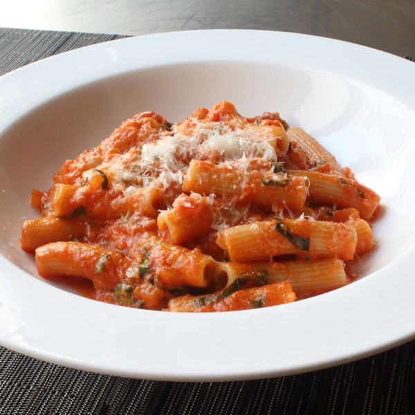
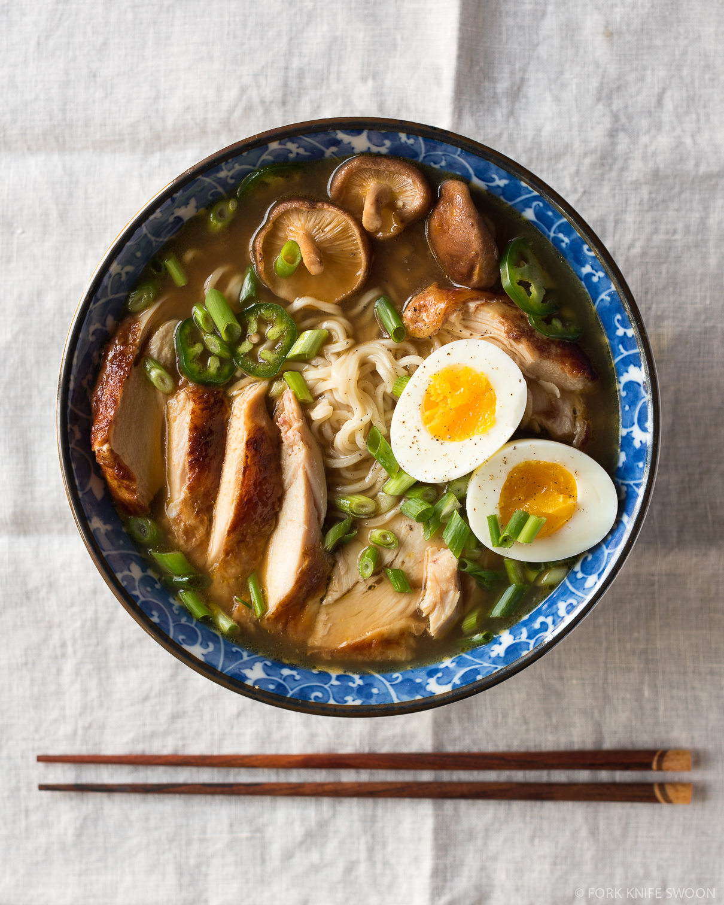

My Favorite Foods
I like a lot of different foods, and I am not a very picky eater. I love cooking, and I would love to owna restaurant someday. Right now my Grandparents have opened their restaurant, where I am working, called "The Meat Shack BBQ"
in the Vagas Hotel. They owned a food truck called before for about 3 years, and still use it for catering. I would 100% reccomend eating there
someday.
Pasta
One of my favorite dishes to both make and eat is pasta. I love all kinds of pasta, but my favorite is basic spaghetti and meatballs.
Almost anyone can make it and there are so many different variaions on it.
Ramen
My all time favorite dish to both make and eat is traditional Japanese ramen. Although it is very time consuming, some recipes taking over 24 hours, it is worth the wait in the end.
Ramen is very costomizable, and anyone can make it. My favorite type of ramen is Spicy Tankatsu Ramen (spicy pork).
Sushi

Sushi is one of my all time favorite foods, especially spicy salmon rolls. Fish is one of my favorite things to eat.
There are so many differeny kinds of sushi, and like Ramen, it is costomizable.